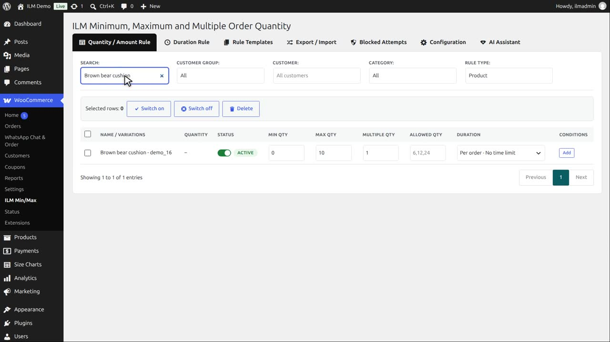
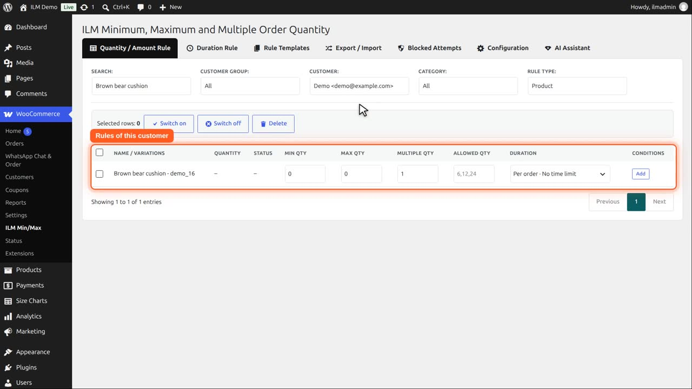

Pro add-on. This feature needs the Pro add-on. See Free and Pro.
Search for a customer by name, e-mail or id in the Customer filter. The table then shows that customer's own rules, and anything you enter is saved for that customer only. A customer's own rule comes before every rule for everyone at the same level. Click × in the filter to go back to the rules for all customers.
The Brown bear cushion has a maximum of ten, for everyone.

In the Customer filter, search for a customer by name or e-mail.
Pick the customer. The table now shows this customer’s own rules, and everything you type is saved for them only.

Type two in Max Qty. A customer’s own rule always comes before the rule for everyone.
Other customers see maximum order ten.
When Demo logs in, the same product shows maximum order two.